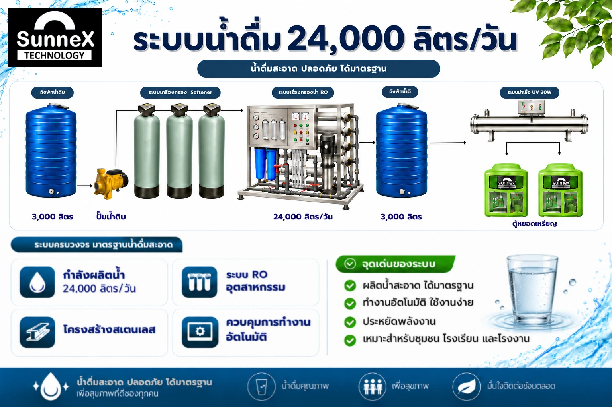

เครื่องกรองน้ำดื่ม RO รุ่น 12Q และ 24Q
เครื่องกรองน้ำดื่ม RO และระบบ RO ผลิตน้ำดื่มสำหรับชุมชน หน่วยงาน และธุรกิจ ออกแบบตามคุณภาพน้ำ กำลังผลิต และพื้นที่ติดตั้ง พร้อมสอบถามราคา

5.1เครื่องกรองน้ำดื่มRO 12Q
ดูรายละเอียดเปรียบเทียบเครื่องกรองน้ำดื่ม RO 12Q และ 24Q
เลือกกำลังผลิตจากปริมาณน้ำที่ต้องใช้ต่อวัน ชั่วโมงเดินเครื่อง และปริมาณสำรองในถัง ไม่ควรเลือกจากจำนวนผู้ใช้งานอย่างเดียว
| ข้อมูลเลือกเครื่อง | RO 12Q / 12 คิว | RO 24Q / 24 คิว |
|---|---|---|
| กำลังผลิตที่ระบุ | 12,000 ลิตรต่อวัน | 24,000 ลิตรต่อวัน |
| แนวทางเลือก | พิจารณาเมื่อความต้องการน้ำอยู่ในกำลังผลิตของรุ่น พร้อมเผื่อถังสำรองและช่วงบำรุงรักษา | พิจารณาเมื่อใช้น้ำมากขึ้น หรือมีหลายจุดจ่าย โดยตรวจน้ำดิบและระบบจ่ายน้ำประกอบ |
| ข้อมูลอุปกรณ์ | ยืนยันรายการชุด 12Q ในใบเสนอราคา | แบบโครงการ 24Q มีชุดกรองก่อนเข้า RO ถังพักน้ำ ระบบ UV และตู้จ่ายน้ำ |
| รายละเอียดสินค้า | เครื่องกรองน้ำดื่ม RO 12Q | เครื่องกรองน้ำดื่ม RO 24Q |
12Q หรือ 12 คิว และ 24Q หรือ 24 คิวในหน้านี้หมายถึงกำลังผลิตต่อวัน ไม่ใช่ต่อชั่วโมง กำลังผลิตจริงขึ้นอยู่กับคุณภาพน้ำดิบ อุณหภูมิ แรงดัน สภาพเมมเบรน และระยะเวลาเดินระบบ
คำถามที่พบบ่อยเกี่ยวกับเครื่องกรองน้ำดื่ม RO
เครื่องกรองน้ำดื่ม RO 12Q กับ 12 คิว คือรุ่นเดียวกันไหม?
ในข้อมูลสินค้าของ Sunnex หมายถึงขนาดกำลังผลิต 12,000 ลิตรต่อวัน ส่วน RO 24Q หรือ 24 คิว หมายถึง 24,000 ลิตรต่อวัน โดยกำลังผลิตจริงต้องประเมินตามเงื่อนไขการเดินระบบ
ควรเลือกเครื่องกรองน้ำดื่ม RO 12Q หรือ 24Q?
เริ่มจากปริมาณน้ำที่ใช้ต่อวัน ชั่วโมงเดินเครื่อง และถังสำรอง หากต้องการกำลังผลิตมากขึ้นให้พิจารณา 24Q โดยให้ทีมงานตรวจคุณภาพน้ำและความพร้อมของหน้างานก่อนสรุปรุ่น
เครื่องกรองน้ำดื่ม RO ใช้กับน้ำประปาหรือน้ำบาดาลได้ไหม?
สามารถออกแบบระบบตามแหล่งน้ำได้ แต่ต้องตรวจคุณภาพน้ำก่อนเลือกชุดปรับคุณภาพน้ำและเมมเบรน ไม่ควรถือว่าทุกชุดรองรับน้ำทุกชนิดได้เหมือนกัน โดยเฉพาะน้ำกร่อยที่ต้องประเมินความเค็มและแรงดันที่เหมาะสม
น้ำผ่านเครื่องกรอง RO แล้วดื่มได้ทันทีหรือไม่?
ต้องตรวจยืนยันคุณภาพน้ำหลังผลิต พร้อมดูแลถังพัก ระบบฆ่าเชื้อ และจุดจ่ายน้ำให้ถูกสุขลักษณะ ชื่อระบบ RO หรือค่า TDS เพียงอย่างเดียวไม่ใช่หลักฐานยืนยันคุณภาพน้ำดื่มทั้งหมด
ชุด RO 24Q ตามแบบมีอุปกรณ์อะไรบ้าง?
ตัวอย่างในแบบมีถังพักน้ำดิบ 3,000 ลิตร ปั๊มน้ำดิบ ชุดกรองก่อนเข้า RO เครื่อง RO 24Q ถังพักน้ำดี 3,000 ลิตร ระบบ UV 30W และตู้หยอดเหรียญ 2 ตู้ รายการจำหน่ายจริงยืนยันตามใบเสนอราคา
ราคาเครื่องกรองน้ำดื่ม RO รวมติดตั้งหรือไม่?
ขอบเขตราคาขึ้นอยู่กับรุ่น คุณภาพน้ำ อุปกรณ์ประกอบ งานท่อ ระบบไฟ และการเตรียมพื้นที่ ควรให้ทีมงานระบุรายการที่รวมและไม่รวมในใบเสนอราคาก่อนสั่งซื้อ
เตรียมข้อมูลก่อนขอราคา
ให้ทีมงานประเมินเครื่องกรองน้ำ RO ตามหน้างาน
ส่งข้อมูลและภาพหน้างานเพื่อประเมินรุ่น อุปกรณ์ และขอบเขตบริการในใบเสนอราคา
- แหล่งน้ำและผลตรวจคุณภาพน้ำ
- ปริมาณน้ำที่ต้องการและชั่วโมงเดินระบบ
- พื้นที่ติดตั้ง ไฟฟ้า และจุดระบายน้ำทิ้ง
- รูปแบบจ่ายน้ำและถังพักที่มี
คำถามที่พบบ่อยเกี่ยวกับเครื่องกรองน้ำ RO
ระบบ RO ต่างจากเครื่องกรองน้ำประปาอย่างไร
ระบบ RO ผลิตน้ำดื่มด้วยเมมเบรน ส่วนเครื่องกรองน้ำประปาสำหรับชุมชนปรับคุณภาพน้ำเพื่อส่งเข้าท่อประปา ดู เครื่องกรองน้ำประปา หรือบทความ RO 12Q กับ 24Q ต่างกันอย่างไร
ระบบ RO ที่ติดตั้งประกอบด้วยอะไรบ้าง
ตามชุดติดตั้งในโบรชัวร์มีถังพักน้ำดิบ 3,000 ลิตร ปั๊มน้ำดิบ ชุดกรอง Softener ชุดกรอง RO ถังพักน้ำดี 3,000 ลิตร ปั๊มน้ำดี ระบบฆ่าเชื้อ UV และตู้หยอดเหรียญ
ระบบ RO ผ่านแล้วดื่มได้ทันทีหรือไม่
ระบบ RO เพียงอย่างเดียวไม่ทดแทนการตรวจยืนยันคุณภาพน้ำดื่ม ควรตรวจคุณภาพน้ำและดูแลไส้กรอง ถัง และระบบจ่ายน้ำตามคำแนะนำของผู้ผลิต
ต้องเตรียมข้อมูลอะไรก่อนขอใบเสนอราคา
แจ้งแหล่งน้ำ ผลตรวจน้ำถ้ามี ปริมาณน้ำที่ต้องการต่อวัน ชั่วโมงที่เดินระบบ พื้นที่ติดตั้ง ไฟฟ้า และจุดระบายน้ำทิ้ง ติดต่อ LINE @sunnext หรือโทร 02-115-1484